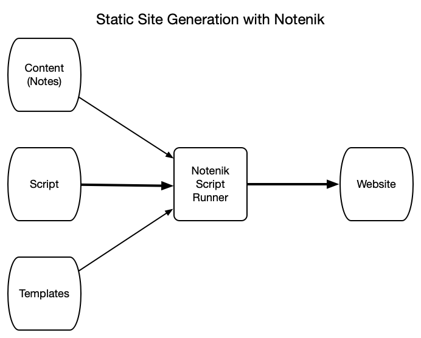

1. Zero to internet: your first website ↑
1.1. Terms and concepts
As we gain more experience with website creation, we will see that our concerns can be separated into three different areas:
- Content — the words and images we wish to share;
- Site and Page Structure — the skeletal structure into which we pour our content;
- Style — font choices, color schemes, text adornment, and so on.
Each piece of content we wish to publish on our website should probably be unique — no point in repeating ourselves, is there?
But the site and page structure should generally not be unique: as visitors move around our site, we probably wish to see common elements such as navigation bars on every page, and wish to see each page laid out in roughly the same fashion.
And then we probably wish to see a consistent style across our site as well.
As we continue our website creation journey, we will learn that our website’s style is generally defined using a different language, something called CSS (short for Cascading Style Sheets), and that HTML makes it easy to put all of your stylistic elements into a single file, and then reference that same style sheet consistently from every page of your site.
So that handles the issue of style: easy to keep it consistent across your entire site, and easy to implement changes across your entire site, by making changes to a single file.
But then that still leaves us with the issue of site and page structure.
Here’s where Notenik can help out.
Notenik can assist you in creating and maintaining a website by acting as a static site generator.

This means that, instead of mixing your page/site structure and content together on every page, you will be creating content as notes within Notenik, and then creating one or more templates that will contain page/site structure.
Each note containing content will eventually become a web page or a post. Each note is saved as an ordinary text file, and you can always open and view each note using your trusty text editor. Each note contains two or more fields: a Title and a Body, at a minimum, but also other handy fields, as they are needed, such as a Seq field that can be used to sort your notes into a desired order.
Notenik uses the term collection to refer to a folder full of notes. Our demo project will contain a few collections within our content folder: one for pages that are relatively static, one for posts that we will be creating as we continue to maintain our site, and one for the various sections of our résumé (otherwise known as a CV).
Your content will then be poured into templates in order to apply consistent page/site structure to the completed web pages.
And the scripts will sort and filter your notes, and then match up the appropriate content with the corresponding templates, in the correct sequence, in order to create your complete site.
As we continue on our HTML journey, we will see that some elements of HTML fall more into the page/site structure area, while others tend to fall into the content area.
So some of the HTML that we learn from Blake will go into our template files, to define page and site structure, while other HTML elements will go into our notes, to structure our text into things like paragraphs and lists, and to provide various forms of emphasis, as writers tend to do with things like bold type, italics and underlines.
And then we will see that much of the HTML going into our content can be more concisely expressed using Markdown. Again, though, the elements we will learn from Blake will be the same — we will just be using a sort of shorthand to make it easier for us to write those elements, and easier for us to work with our content.
All static site generators involve tradeoffs. Their advantage is that they eliminate repetitive HTML coding, saving time and preventing errors, and making changes easier. Their disadvantage is that they add an extra step to website creation, by requiring a build step. Notenik’s build step consists of running one or more scripts using Notenik’s script runner.
As we work through this tutorial, there will be actions to be taken within Notenik, others within our text editor, and still others to be taken with the macOS Finder. I’ll try to clearly identify which steps are to be taken with which tool.
BTW, all of the details about Notenik can be found in the Notenik Knowledge Base, which can be found either on the web, or within Notenik itself. From time to time I’ll provide links to relevant sections within the web version of this document, in case you want more details on any particular topic discussed here.
I think that’s enough of a conceptual overview for now… let’s start creating!
Next: 1.2. Create a New Notenik project